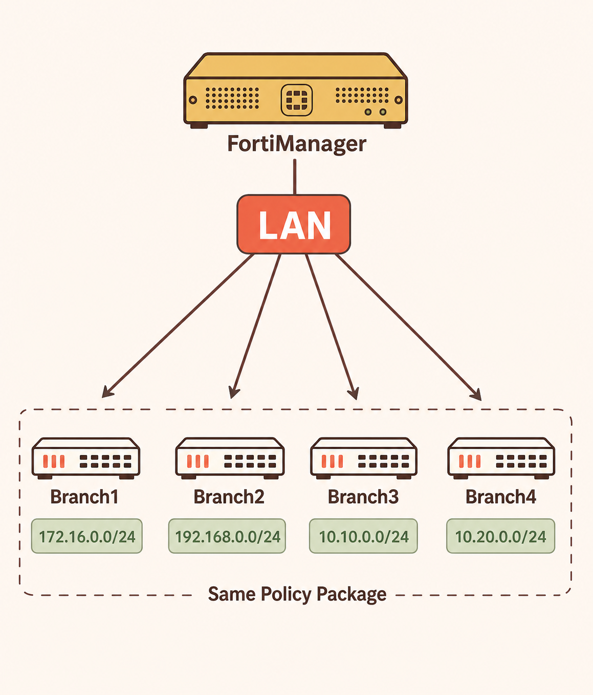
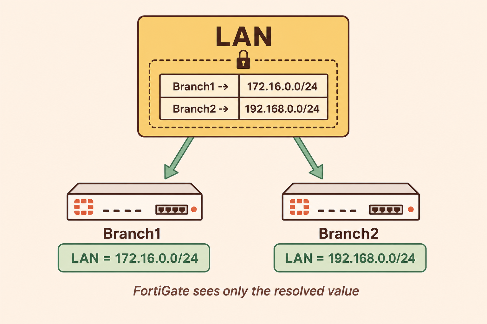
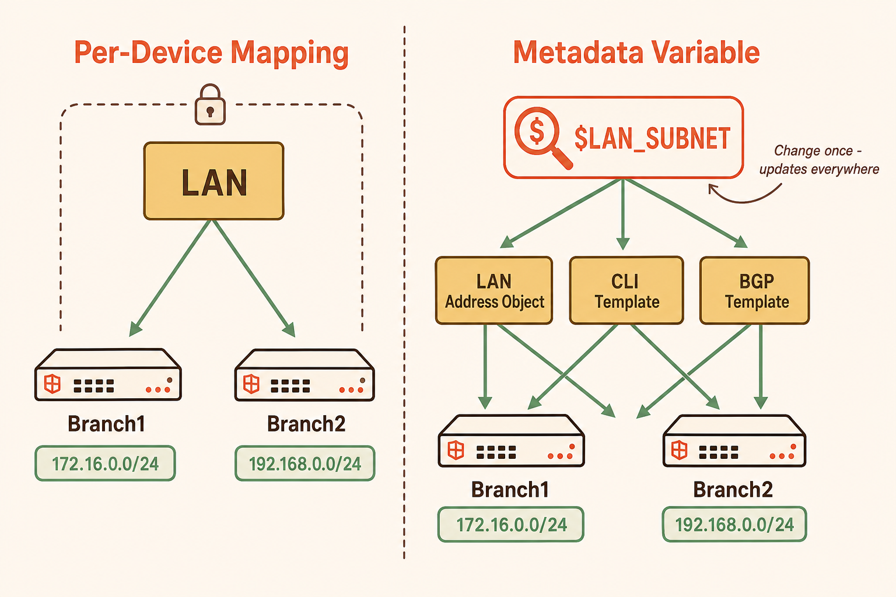
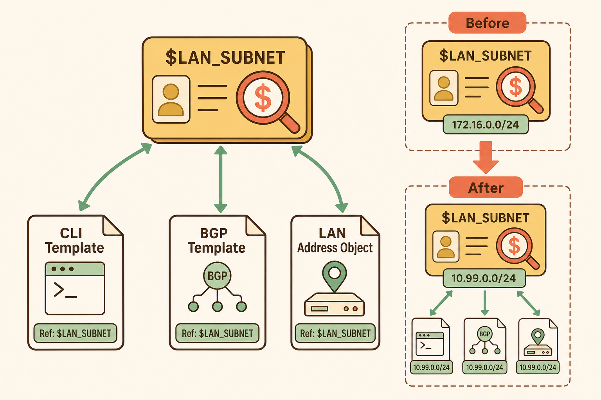
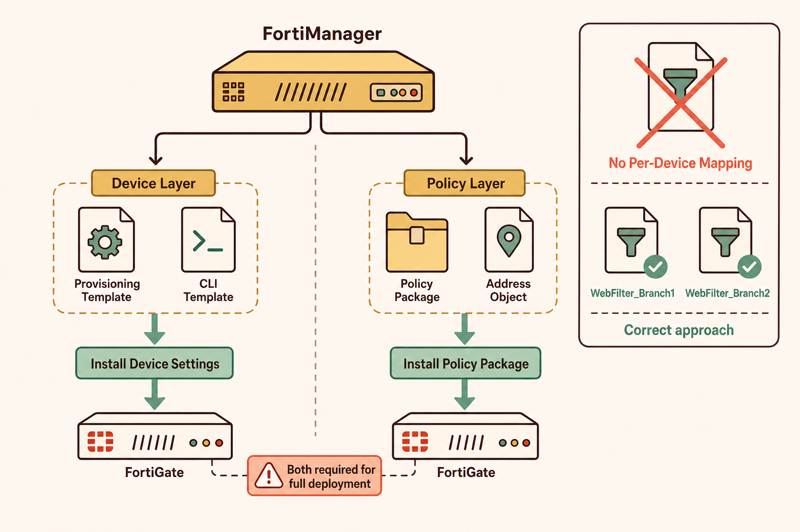

FortiManager is built to be a single source of truth. But in a real enterprise, 50 branches each have a LAN interface — and none of them share the same subnet. Before dynamic objects existed, this created a fundamental contradiction between centralisation and device-specific reality.
- You are managing 50 branch FortiGates from a single FortiManager. Every branch has an address object called LAN, but each uses a different subnet. What problem does this create, and why can't you just create 50 uniquely named address objects to solve it?
- If you were a junior engineer who created 50 separate address objects — one per branch — what would your troubleshooting experience look like when a policy stops working at Branch37?
The Problem Dynamic Objects Solve

One object name — LAN — resolves differently on every branch firewall.
FortiManager's entire value proposition rests on centralised policy management — one policy package deployed across many devices. But real enterprise networks are not uniform. Each branch firewall has device-specific values: different LAN subnets, different interface names, different BGP AS numbers. Without a mechanism to handle this variation, you would need a separate policy package for every device — which is not centralised management at all.
Dynamic objects solve this by separating the object name from the object value. The policy package references a single object called LAN. FortiManager then resolves that name to the correct device-specific value at install time. The FortiGate receives a clean, resolved configuration — it is completely unaware that any mapping logic existed. This keeps policy packages shared and manageable while still delivering the correct configuration to each individual firewall.
Per-device mapping is the first and most direct form of dynamic object in FortiManager. It is attached to a specific object and stores a different value for each device underneath that single object name. Understanding exactly what it is scoped to — and what FortiGate receives — is the foundation of this entire topic.
- You configure the LAN address object in FortiManager with per-device mapping: Branch1 maps to 172.16.0.0/24 and Branch2 maps to 192.168.0.0/24. When FortiManager installs the policy package to Branch1 — what exactly does Branch1 receive, and what does it NOT receive?
- Per-device mapping is described as being "attached to a specific object." What does that mean in terms of its limitation — what problem can it NOT solve on its own?
Per-Device Mapping on Address Objects

Per-device mapping stores device-specific values inside a single object. The mapping is invisible to FortiGate after install.
Per-device mapping is configured directly on a supported object in FortiManager — most commonly address objects such as firewall addresses, Virtual IPs, and IP pools. Within the object configuration, you specify a default value and then add device-specific overrides for each FortiGate that needs a different value. At install time, FortiManager substitutes the correct value for the target device before pushing the configuration.
The key characteristic of per-device mapping is that it is scoped to the individual object. Each object carries its own mapping table. This works well for simple deployments where one object's value varies per device. However, when many objects and templates across the policy package all reference the same piece of device-specific information — such as a branch LAN subnet — per-device mapping requires that subnet to be configured independently in every one of those objects. This is where metadata variables become necessary.
| Object Type | Supports Per-Device Mapping? | Notes |
|---|---|---|
| Firewall Addresses | ✅ Yes | Most common use case — branch LAN subnets |
| Virtual IPs & VIP Groups | ✅ Yes | Useful for NAT differences per site |
| IP Pools & IPv6 Pools | ✅ Yes | Per-site NAT pool variation |
| User Groups / LDAP / RADIUS | ✅ Yes | Per-site authentication servers |
| Metadata Variables | ✅ Yes | Listed under Policy & Objects > Advanced |
| Web Filter Profile | ❌ No | Must use unique profile names per variation |
| Antivirus / IPS Profiles | ❌ No | Security Profiles are excluded |
| Application Control | ❌ No | Create separate profiles per site |
Metadata variables solve the multi-touchpoint problem that per-device mapping cannot. A single variable carries a per-device value that can be referenced across address objects, CLI templates, BGP templates, and policy packages simultaneously. One change propagates everywhere.
- You have a metadata variable called $LAN_SUBNET. Branch1 is mapped to 172.16.0.0/24. You reference $LAN_SUBNET in a CLI template, a BGP template, and a firewall address object. Branch1's subnet changes to 10.99.0.0/24 next month. What do you change in FortiManager — and what is the outcome?
- Where in the FortiManager GUI are metadata variables created and managed, and in which two places can they be referenced?
Metadata Variables — One Change, Everywhere

$LAN_SUBNET is defined once. Every object and template that references it resolves the correct value per device automatically.
A metadata variable is a named, reusable variable that holds a per-device value and can be referenced across multiple configuration items simultaneously. While per-device mapping is embedded within a single object, a metadata variable lives independently — created under Policy & Objects > Advanced > Metadata Variables — and any supported object or template can reference it using the $ prefix. In the GUI, metadata variables are identified by a magnifying glass with a dollar sign icon.
The power of a metadata variable becomes clear at scale. Imagine a branch LAN subnet is referenced in a firewall address object, a CLI template configuring a static route, and a BGP provisioning template. With per-device mapping alone, that subnet value must be entered and maintained separately in each of those three locations. With a metadata variable, all three reference $LAN_SUBNET — and when that value changes for a device, a single update to the metadata variable propagates to every object and template that references it on the next install.
Think of a metadata variable like a master contact card in a company address book.
- Per-device mapping is like writing a phone number directly on each individual document that needs it — if the number changes, you update every document separately.
- A metadata variable is like a contact card referenced by all those documents — change the card once, and every document that references it automatically reflects the new number.
- In Fortinet terms: the contact card is the metadata variable; the documents are your CLI templates, BGP templates, and address objects. One update to the variable, resolved everywhere on the next install.

One contact card — referenced everywhere. Change it once.
Knowing how dynamic objects work is not enough — you also need to know where they break down, and what it takes to actually deliver configuration to a firewall. Two of the most common NSE7 traps live here: which objects cannot use per-device mapping, and the fact that two separate install operations are required for device-layer and policy-layer changes.
- A candidate wants to use per-device mapping to give Branch1 a permissive web filter profile and Branch2 a restrictive one — both under the same profile name in FortiManager. Is this possible, and if not, what is the correct approach?
- You have onboarded Branch51 and added it to the $LAN_SUBNET metadata variable. You have also assigned a CLI provisioning template and a policy package to it. What two operations must you perform to ensure Branch51 receives all configuration, and why are they separate?
Limitations, Install Operations, and Production Traps

Two separate install operations push device-layer and policy-layer configuration. Security Profiles cannot use per-device mapping — a common exam trap.
Not all FortiManager objects support per-device mapping — and this is a deliberate design decision. Security Profiles are excluded: Web Filter, Antivirus, IPS, Application Control, and related profiles cannot be mapped per device. This prevents a situation where the same profile name carries fundamentally different inspection behaviour depending on which firewall is receiving it — a scenario that would make centralised security auditing unreliable. If branches genuinely require different security profile behaviour, the correct approach is to create uniquely named profiles for each variation and reference them appropriately per device or per policy.
The second production trap is the install operation. FortiManager maintains two distinct layers — the device layer and the policy layer — and changes to each are pushed by separate install operations. Provisioning templates (CLI templates, BGP templates, SD-WAN templates) are pushed by Install Device Settings. Policy packages and their associated address objects are pushed by Install Policy Package. When onboarding a new device or making changes that span both layers, both operations must be completed. If only one is performed, the firewall will be partially configured — which is a difficult failure mode to diagnose because each layer may appear correct in isolation.
| Mechanism | What It Is Attached To | Where It Can Be Used | Best For |
|---|---|---|---|
| Per-Device Mapping | A specific object (address, VIP, IP pool, etc.) | Policy layer and device layer (on supported objects) | Simple deployments where one object's value varies per device |
| Metadata Variable | Independent variable (Policy & Objects > Advanced) | Provisioning templates and policy layer objects/packages | When the same value is referenced across multiple objects and templates |
config router static
edit 1
set dst $LAN_SUBNET
set gateway 10.0.0.1
set device "port2"
next
endPolicy & Objects > Advanced > Metadata Variables
→ Create New
→ Name: LAN_SUBNET
→ Type: Subnet
→ Default Value: 0.0.0.0/0
→ Per-Device Mapping:
Branch1 → 172.16.0.0/24
Branch2 → 192.168.0.0/24
Branch51 → 10.99.0.0/24